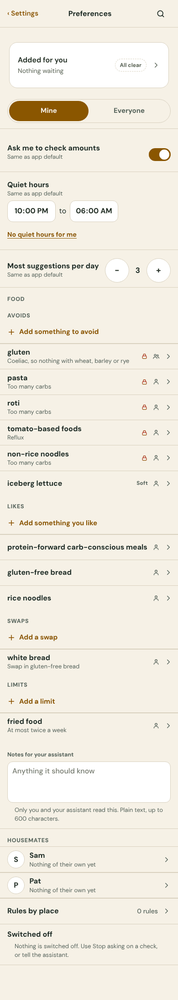
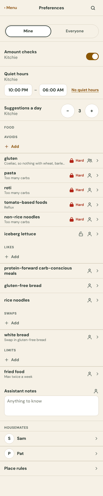
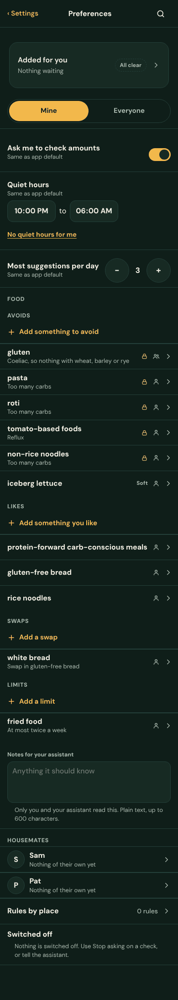
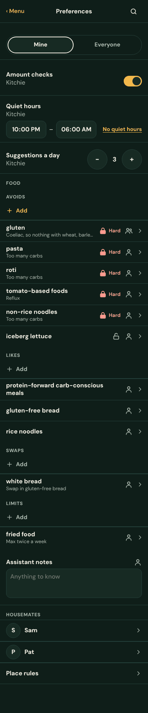

Both pages were run for real (the Kitchie web harness, same data: gluten Hard for Everyone with a reason; pasta, roti, tomato-based foods, non-rice noodles Hard for you; iceberg lettuce Soft; three likes, a swap, a limit) and photographed at 390 wide, light and dark.




What the earlier page did better, and what is crowded now, in five lines:
Read from Kitchie UAT 0.180.0 (settings-phone.ts, preferences/flat.ts, preferences/food-flat.ts, food-card.ts) and the 0.177.0 pages. Everything in the left column is on every option; the right column says where it lives.
| Exists | How it works today |
|---|---|
| Mine / Everyone | A two-way control at the top. Everyone is the household’s own settings and rules; editable by admins, read-only for others with one line. |
| Amount checks | A switch (“Ask me to check amounts”). On Mine it follows the household, then Kitchie, until you set your own; a small undo goes back. |
| Quiet hours | Two times, default 10pm to 6am. On Mine only: “No quiet hours” and “Use quiet hours”. The Settings front row Preferences already shows the value (“10pm–6am” or “Off”). |
| Suggestions a day | A stepper, 1 to 20, default 3. |
| Food rules | Four kinds: Avoids (Hard first, then Soft), Likes, Swaps, Limits. A row: the name, one quiet line (reason, swap, “Max twice a week”, when, until, recipe count), Hard (a filled lock) or Soft (an open lock), who it is for (Everyone or Just you). A rule on a category (“Spicy”) has its own opened row. |
| Opened rule | Hard or Soft (Hard to Soft asks once: “Make soft? It can still turn up.”; Soft to Hard does not), a Reason field that saves as you type, the end of a like (“Keep”), Stop remembering (a Hard avoid asks once). “Change it: tell your assistant.” Everyone or Just you is shown, not a control: moving a rule between them has no operation today. |
| Add | Adding a rule is the assistant’s (food F8): Add opens a line that says what to tell it, with an example; on Everyone it adds “Say it is for everyone.” |
| Assistant notes | A text box, 600 characters. Admins only on Everyone. |
| Housemates (Mine) | One row per person; opens to their food shown read-only, “Suggest for Sam”, and “Review N” when something waits. |
| Place rules | A count, opens the rules by place (an item, a category or a place, a level, how often). |
| Switched off (Mine) | Checks switched off, each with “Ask again”. Absent when nothing is switched off. |
| Added for you | A banner at the top of Mine when proposals wait. Not drawn here (it only appears when something waits, and sits above every option the same way). |
Same data on every phone: gluten Hard for Everyone with its reason; pasta, roti, tomato-based foods and non-rice noodles Hard for Just you; iceberg lettuce Soft; likes: protein-forward carb-conscious meals, gluten-free bread, rice noodles; one swap, one limit; quiet hours 10pm–6am; two housemates, two place rules, one thing switched off. Every phone plays: tap, open a rule, make Pasta soft, switch to Everyone. Food is first wherever the page is reorganised, because all four of the common jobs are food jobs.
Taps are the played sequences (the check script plays each one and checks the end state): See is what it takes to see the avoids, Add to reach the add line for an avoid, Hard to Soft includes the one confirm (Pasta), Everyone is switching Mine to Everyone. Words are the words a person reads on the first screen, counted by the page from what is drawn (sample data and screen-reader text are not counted). Height is the first view, in screens of 844px.
| Option | Job to be done | Gets the accent | Words | Height | See | Add | Hard to Soft | Everyone | For | Against |
|---|
Why G. It answers the complaint without changing what he knows: the rows are the 0.177.0 rows, but only one kind shows at a time, so the page holds six rows and not eleven. Avoids is chosen on arrival, so the first job (see what is avoided) costs no tap. The four kinds are a segmented control with counts on them (“Avoids 6”), which is exactly what DESIGN.md 9.4 prescribes for one of two to five, and the counts are values on a control, the idea he loved. Add belongs to the chosen kind. The cost: a Like, a Swap or a Limit takes one more tap to see, and at +30% the chips wrap to two rows.
Why not the others first. D and E hide the avoids behind a tap, and avoids are the safety job. F hides everything but one screen. C and I are the calmest to look at but ask him to learn a shape (a ring, a chip) at low vision. H is calm but every edit is a modal.
B is the runner-up if he would rather read than decode: “Never gluten” needs no lock, no heading and no “Just you” mark. It does carry Hard and Soft in a word and not a glyph, which DESIGN.md 9.1 and 9.3 prefer the other way round (open question SR-Q64). A is the safe fallback: the page he knew, with the values added and the repeated words cut.
Nothing is decided. Recommended picks are proposals for him to choose between, by looking at the phones above.
Words. Screen title 1 to 3 words; every row label, chip and button 3 words at most (“Suggestions a day” is 3); state is a glyph (a filled lock is Hard, an open lock is Soft, two people is Everyone) with the word only in the opened row and for screen readers; helper text is none, except the one line that appears after Add, and the two confirms.
Accent. One per phone, named in the table. The switch is the standard control colour when it is on. Mine and Everyone is an outline and a tick, never the accent (so the accent stays on one thing).
Targets and size. Every control is at least 44px both ways and scales with text size (em); at +30% nothing is cut and nothing scrolls sideways (the check script measures it at 390 and 360, light and dark, both text sizes, on every option and in the opened and Everyone views). Glyphs are in em, 1.4em (22px at normal) for state marks.
Not colour alone. Hard is a filled lock, Soft an open lock, Everyone two people, Just you one, a chosen chip has a tick and an outline. Dark is checked the same way.
Tab order follows the screen, top to bottom, with no tabindex. F: the pages off screen are inert (not focusable) and the arrows are real buttons, so swipe is never the only way. H: the sheet traps focus, closes on Escape and returns focus to the row. The check script tabs through each option and requires the last control to be reached.
Performance. The default path loads theme.css, shared.css, po.css (9KB) and po.js (one file for nine options); the screenshots under before/ are loaded lazily and only on this page; nothing is fetched on the phone itself. The real page is server-drawn and loads only the Food scripts that a row needs; none of these options changes that.
Design review. DESIGN.md 9.8 requires a review by a separate senior mobile UX agent. It has not been done on this fragment. The builder (this session) has not reviewed its own work against the checklist and does not claim a verdict.